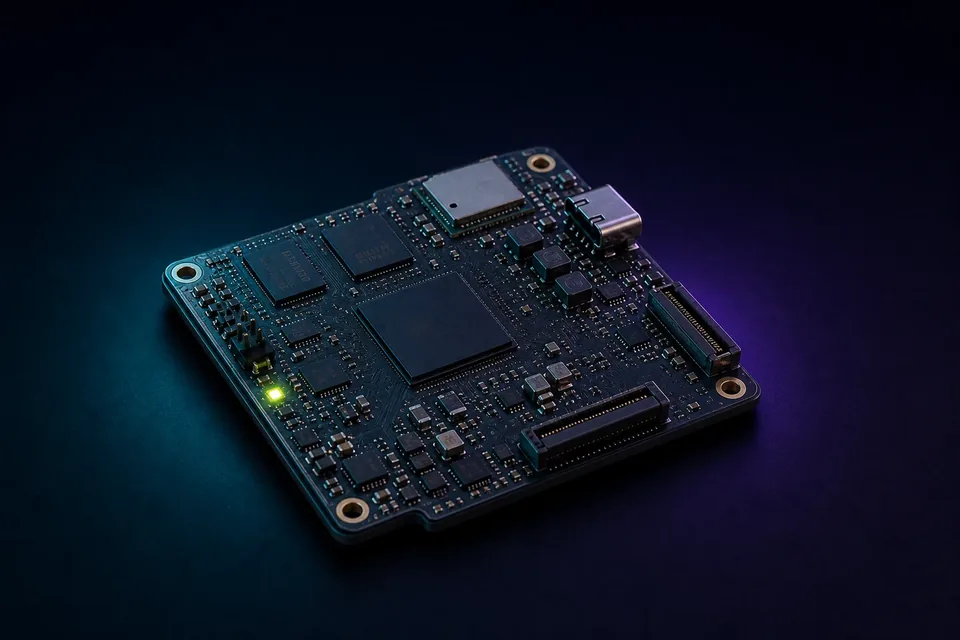

Available for customer programmes
Compact connected platform
EDGE LITE
A production-minded i.MX 8M Mini platform for connected products that need a compact embedded core, modern wireless options and flexible display or camera integration.

Platform outline
A capable baseline without module-and-carrier overhead
ProcessorNXP i.MX 8M Mini platform
ConnectivityWi-Fi 6, Bluetooth and 802.15.4 options
InterfacesUSB-C plus planned MIPI display and camera support
StorageeMMC baseline, configured per programme
EnvironmentConsumer and industrial-temperature options
SoftwareBoard-specific embedded Linux and container deployment path
Best fit
Connected products with a clear production target
- Voice and edge-AI interfaces
- Industrial monitoring nodes
- Connected displays and controllers
- Products migrating from fragile prototype stacks
Customise without restarting
Depopulate unused features for volume, change the form factor, add project-specific sensing or I/O, and retain the supported platform foundation.
Customer programme
Is EDGE LITE close to your product?
Bring the workload, interfaces, power target and intended volume. We will qualify the standard platform and any required customisation.